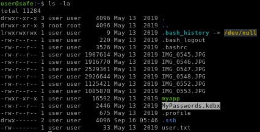
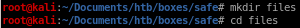
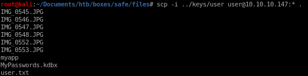
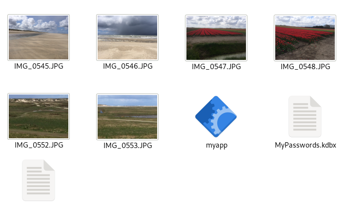

Index
- nmapAutomator
- http
- initial foothold
- ghidra
- buffer overflow
- privilege escalation
- user/root
- lessons learned
exfiltrate keepass
We find a KeePass database. Let’s copy everything into our attack machine. The easiest way to do this is through SCP since SSH is open.
lets make a directory for the files to stay organized

scp -i ../keys/user user@10.10.10.147:* .
where
• is to download all the contents of /home/user
. is to save all the contents to our current directory

we see a bunch of pictures here, lets use
nautilus . to view them in a nice folder


we see that these are standard jpegs when using exiftool and binwalk to anayze them so no need to screenshot them in the writeup, however they hold a hidden key file for our keepass (kdbx file since they sometimes require a key to unlock them)